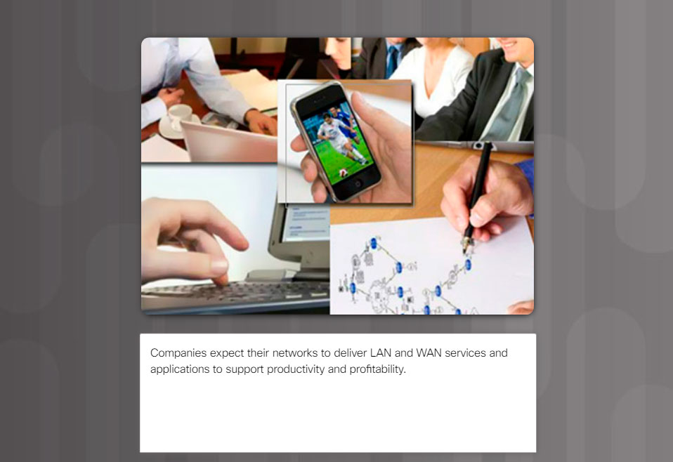

Branching Out
Your medium-sized company is opening a new branch office to serve a wider, client-based network. This branch will focus on regular, day-to-day network operations, but will also provide TelePresence, web conferencing, IP telephony, video on demand, and wireless services.
Although you know that an ISP can provide WAN routers and switches to accommodate the branch office connectivity for the network, you prefer to use your own customer premises equipment (CPE). To ensure interoperability, Cisco devices have been used in all other branch-office WANs.
As the branch-office network administrator, it is your responsibility to research possible network devices for purchase and use over the WAN.